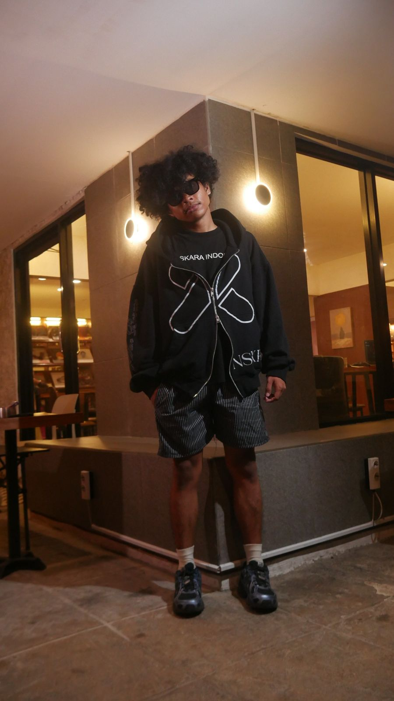
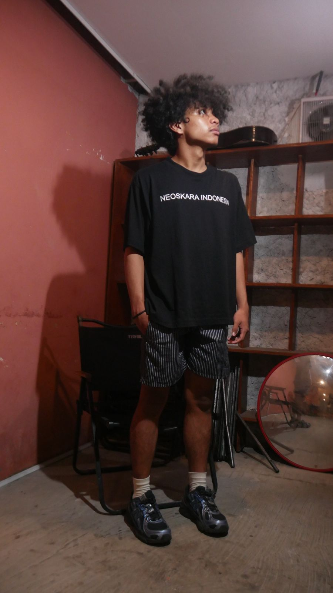

Barabai Hulu Sungai Tengah Borneo
Neoskara Indonesia
Pakaian harian dari Barabai, Kota Apam di kaki Pegunungan Meratus. Potongan oversize, sablon bersih, dan cerita yang kami pakai dengan bangga.


Koleksi
Shop
Harga di halaman ini masih contoh untuk pratinjau desain.
Kampanye
Save Borneo
- Help our forests
- Help our land
- Help our animals
- Help our house
- Help our people
Do you not care about the lungs of the world today?
Kami tumbuh di kaki Pegunungan Meratus, hutan yang selama ini dijaga warga Hulu Sungai Tengah dari tambang. Lewat kaos #SaveBorneo, kami ingin lebih banyak orang ikut peduli dan membicarakannya.
Pre-order sekarangKomunitas
#NeoFCteam
Kami percaya pada @neofcteam dan @neo.catalague. Neoskara bukan cuma baju, tapi juga teman main bola, nongkrong, dan berkarya bareng.
Join communityDari Kota Apam
Neoskara dibuat di Barabai, untuk anak muda Hulu Sungai Tengah yang bangga berasal dari Borneo.
-
Kota Apam
Apam Barabai
Kue tradisional yang jadi kebanggaan Barabai, dicari orang sebagai oleh-oleh dari Hulu Sungai Tengah. Bersama pakasam, inilah rasa khas kampung halaman kami.
-
1.894 mdpl
Pegunungan Meratus
Barabai berada di kaki Meratus. Puncak tertingginya, Gunung Halau-Halau, ada di wilayah HST. Hutan inilah yang ingin kami jaga.
-
Semboyan HST
Murakata
Mufakat, rakat, dan seiya sekata. Semangat bersepakat dan bergerak bareng, sama seperti komunitas yang kami bangun.
-
Sejak 24.12.1959
Sungai Barabai
Mengalir dari Meratus melewati kota, bersama Sungai Batang Alai. Udara sejuknya membuat HST dijuluki Bandung van Borneo.
- Oversize fitPotongan longgar yang tetap rapi di badan.
- Sablon awetTidak gampang retak setelah dicuci berkali-kali.
- Edisi terbatasRilis dalam jumlah kecil lewat pre-order.